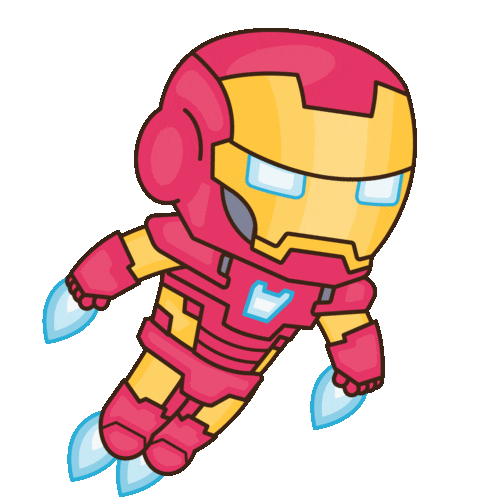
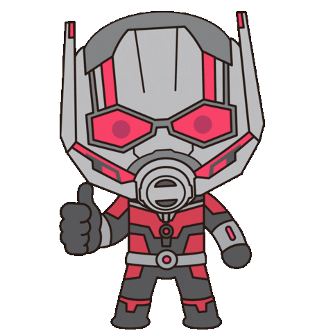

-
Homem Aranha #001
- Peter
- Parker
Com incríveis habilidades de aranha, o gênio da ciência adolescente Peter Parker luta contra o crime e sonha em se tornar um Vingador como Homem-Aranha.
-
Capitão América #002
- Steve
- Rogers
O supersoldado americano da Segunda Guerra Mundial continua sua luta no presente como um vingador e incansável sentinela da liberdade.
-
Homem de Ferro #003
- Tony
- Stark
O inventor Tony Stark aplica seu gênio para soluções de alta tecnologia para problemas como Homem de Ferro, o Vingador blindado.
-
Hulk
#004
- Bruce
- Banner
Exposto a altas doses de radiação gama, o cientista Bruce Banner se transforma na mesquinha máquina de raiva verde chamada Hulk.
-
Viúva Negra #005

- Natasha
- Romanoff
Um assassino mortal está se aproximando de Natasha Romanoff. Agora Natasha deve se reunir com um improvável grupo de espiões de seu passado para sobreviver e impedir que uma força letal seja liberada no mundo.
-
Thor
#006- Thor
- Odinson
Thor Odinson exerce o poder dos antigos Asgardianos para combater o mal nos Nove Reinos e além.
-
Doutor Estranho #007
- Stephen
- Strange
Outrora um cirurgião altamente bem-sucedido, mas notavelmente egoísta, o Doutor Stephen Strange sofreu um terrível acidente que o levou a evoluir de maneiras que ele nunca poderia ter previsto.
-
Feiticeira Escarlate #008
- Wanda
- Maximoff
Notavelmente poderosa, Wanda Maximoff lutou contra e com os Vingadores, tentando aprimorar suas habilidades e fazer o que ela acredita ser certo para ajudar o mundo.
-
Pantera Negra #009

- T'Challa
Como o rei da nação africana de Wakanda, T'Challa protege seu povo como o último de uma linha legada de guerreiros Panteras Negras.
-
Homem Formiga #010
- Scott
- Lang
Ladrão que virou herói Scott Lang usa tecnologia de manipulação de tamanho para se infiltrar em bases e intimidar bandidos. Esteja ele comandando um exército de insetos ou com 20 metros de altura, Scott está sempre tentando fazer a coisa certa agora que é o Homem-Formiga.